Pasos para crear un catálogo
Los pasos para crear un catálogo de Bingo Intelligence son:
- Establecer la conexión con el servidor de datos
- Crear el diagrama de tablas, añadiendo las tablas, y creando las relaciones entre ellas.
- Crear las dimensiones, indicadores y filtros que tendrán los usuarios para definir sus informes.
- Organizar en carpetas las dimensiones, indicadores y filtros del catálogo, para que resulte fácil a los usuarios localizarlos y trabajar con los diferentes elementos.
- Verificar el correcto funcionamiento del sistema.
La creación de un catálogo es un proceso relativamente sencillo, sin embargo, conviene conocer el modelo de datos de la base de datos, y tener conocimientos sobre modelización de datos y algunas nociones sobre el lenguaje SQL.
En los siguientes apartados se describe con más detalle este proceso.
Crear un “nuevo catálogo”
Para empezar se debe seleccionar la opción “Nuevo catálogo” del menú “Archivo”. Aparecerá el formulario de propiedades generales del catálogo.
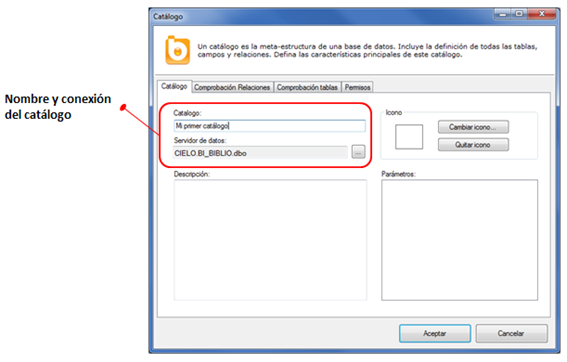
En este formulario debemos indicar un nombre para este nuevo catálogo, y debemos seleccionar la base de datos a la que nos conectaremos.
Cada catálogo necesita tener definida una, y sólo una, conexión. Bingo Intelligence se conectará a ese servidor para obtener la estructura de la base de datos y, posteriormente, se conectará para ejecutar las consultas de los usuarios.
En este ejemplo utilizaremos la conexión a la base de datos de ejemplo BI_BIBLIO. Si aún no tienes esta base de datos instalada en tu organización, puedes consultar el artículo sobre cómo instalar “LA BIBLIO”. Si quieres que el catálogo se conecte a otra base de datos, deberás crear una nueva conexión desde el “Administrador de tecnologías”.
Una vez seleccionado el servidor de datos, se debe hacer clic en el botón “Aceptar”, y se abrirá el “Diseñador de catálogos”:
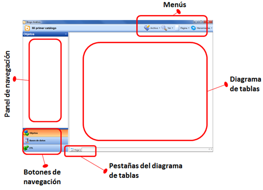
Crear el diagrama de tablas
Inicialmente, tal y como aparece en la imagen superior, el catálogo está vacío. No tiene ninguna tabla ni ningún objeto creado.
Para continuar con la construcción del catálogo, se debe crear el diagrama de tablas. Para ello, es necesario arrastrar las tablas desde el “Panel de navegación de bases de datos” hasta el diagrama de tablas (en el área principal de la aplicación).
Para ver las tablas existentes en la base de datos, se debe pulsar el botón “Bases de datos”, y abrir la pestaña “Servidor”:
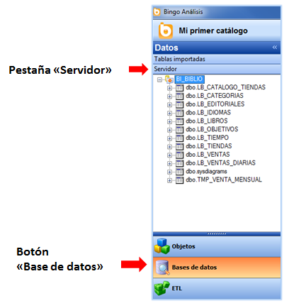
En el panel de navegación deben aparecer las bases de datos y desplegando el árbol se muestran las tablas, vistas y campos existentes. En caso contrario, se debe verificar la conexión desde el “Administrador de tecnologías” y se debe verificar que en la ventana de propiedades del catálogo se ha seleccionado la conexión correcta.
La tablas se incluyen en el diagrama mediante drag&drop desde el panel de navegación. De esta manera, podemos incluir, por ejemplo, las tablas de “ventas”, “tiendas”, “tiempo” y “libros” de la base de datos de ejemplo.
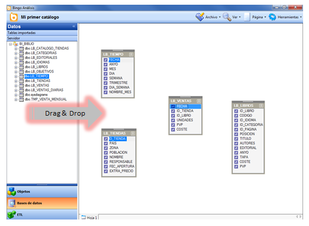
Bingo Intelligence no importa las relaciones automáticamente. Conociendo el modelo de datos, se tienen que crear las relaciones mediante “drag&drop”. Por ejemplo, para crear la relación entre la tabla de “ventas” y la tabla de “tiendas”, se debe arrastrar el campo “ID_TIENDA” de la tabla de ventas, al campo “ID_TIENDA” de la tabla de tiendas. Del mismo modo, podemos hacer la relación con las tablas de libros y fechas.
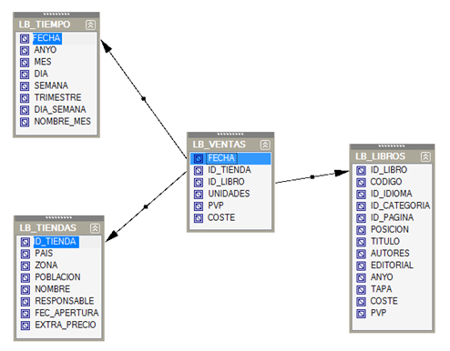
Al crear las relaciones, el diseñador de catálogos mostrará un “flecha” indicando la relación. El sentido de la relación es muy importante, y determinará el modo en que Bingo Intelligence construye las sentencias SQL. La relación siempre ha de ser desde la tabla más detallada hasta la tabla más “resumida”. Normalmente, el extremo de la “flecha” coincidirá con la clave primaria de una tabla de dimensión.
Si necesitamos modificar o eliminar una relación, podemos hacerlo desde el menú contextual (botón derecho del ratón) situado en el centro de la relación.
Bingo Intelligence admite cualquier modelo de datos. Se puede representar un modelo en estrella (como en la imagen superior), un modelo en copo de nieve, un modelo normalizado, o cualquier otro modelo que esté creado en la base de datos. De todos modos, se debe tener en cuenta que el rendimiento de las aplicaciones de Bingo Intelligence depende directamente del rendimiento de la base de datos subyacente.
En este caso, completaremos el diagrama de esta “estrella” añadiendo las tablas de “categorías de libros” e “idiomas”.

Crear las dimensiones, indicadores y filtros
Una vez que se tiene el diagrama de tablas preparado ya se pueden crear los elementos que verán los usuarios. Existen tres tipos de elementos que se deberán definir:
- Dimensiones. Son los conceptos que se utilizan para filtrar, segmentar o agrupar la información en los informes corporativos. Dimensiones habituales son “Clientes”, “Nacionalidad”, “Productos”, “Familias de productos”, etc. Habitualmente, son elementos alfanuméricos, y se incluyen en las cláusulas SELECT y GROUP BY de las sentencias SQL.
- Indicadores. Son las métricas que se analizan en los informes. Indicadores habituales son “Ventas”, “Compras”, “Número de empleados”, etc. Se trata de información numérica, y se suele incluir en las cláusulas SELECT con alguna función de agregación (sum, avg, min, max,...).
- Filtros. Son restricciones que pueden incluir los usuarios para limitar la información que quieren consultar. Filtros habituales pueden ser “Año en curso”, “Clientes nacionales”, etc. Se incluyen en las cláusulas WHERE y HAVING de las sentencias SQL.
La manera más rápida y cómoda de crear el catálogo es arrastrando los campos o tablas del “diagrama de tablas” hasta el “panel de navegación de objetos”.
- Al arrastrar un campo, Bingo Intelligence crea automáticamente una dimensión.
- Al arrastrar una tabla, Bingo Intelligence crea una carpeta y crea una dimensión para cada campo de la tabla.
Posteriormente podremos añadir, modificar o eliminar los elementos según las necesidades. Por ejemplo, al arrastrar la tabla de “Tiendas”, Bingo creará estos elementos:
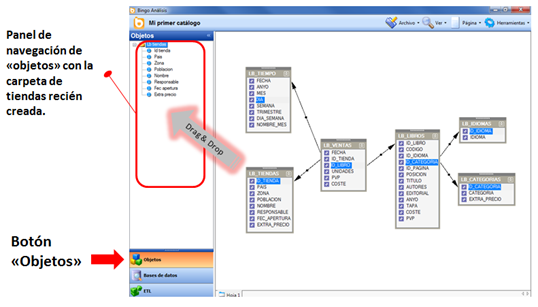
Una vez creados, podemos modificarlos fácilmente. Desde el menú contextual (botón derecho) de cada elemento podemos abrir el formulario de “Propiedades”:
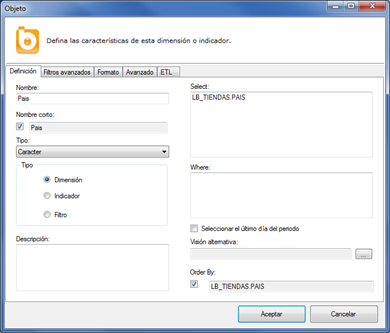
Desde esta ventana podemos modificar el nombre de la dimensión, y su definición SQL. De esta manera, renombraremos el elemento “Fec apertura” llamándole “Fecha de apertura”, a la dimensión “Responsable” la llamaremos “Responsable comercial”, y pondremos los acentos en las palabras “País” y “Población”. También se puede renombrar un objeto pulsando F2, o con un doble clic lento del ratón.
En el menú contextual también tenemos la opción de eliminar un objeto. En este caso, eliminaremos “Id Tienda”, que es un código interno irrelevante para los usuarios.
Una vez aplicadas es modificaciones, la carpeta “Tiendas” tendrá este aspecto:
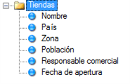
De este modo se puede crear el catálogo, arrastrando sucesivamente todas las tablas, renombrando o eliminando los objetos cuando se necesario, y ajustando la definición SQL si hace falta. Si creamos una carpeta para cada tabla el catálogo resultante tendrá este aspecto:
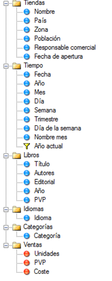
En esta imagen superior aparecen tres tipos de iconos diferentes, que identifican cada tipo de objeto:
- Las “bolas azules” son dimensiones.
- Las “bolas rojas” son indicadores. Para crear estos indicadores se ha seleccionado la opción “Convertir en indicador” del menú contextual (botón derecho).
- El “embudo amarillo” es un filtro. En este caso, se ha creado el filtro “Año actual” definiéndolo manualmente de esta manera:
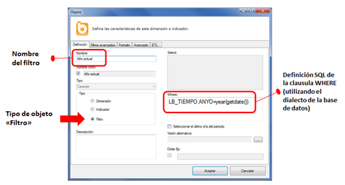
En este catálogo también hemos eliminado todas las claves foráneas y las claves primarias. Habitualmente, estas claves no tienen un significado de negocio, por lo que no es necesario que los usuarios tengan acceso a ellas. Únicamente se han dejado las dimensiones e indicadores que pueden ser relevantes para los usuarios. Posteriormente, si es necesario, siempre podremos añadirlas al catálogo.
En este momento, el catálogo ya es funcional, y ya se podría crear una aplicación, o hacer algunas pruebas sobre el correcto funcionamiento del sistema. Sin embargo, conviene organizar mejor las dimensiones, indicadores y filtros del catálogo.
Organizar en carpetas las dimensiones, indicadores y filtros
Para construir los informes, los usuarios podrán escoger las dimensiones, indicadores y filtros que quieren incluir, y Bingo Intelligence generará la consulta o consultas necesarias para mostrar el resultado correcto.
En el catálogo debemos organizar las carpetas teniendo en cuenta las necesidades de los usuarios de negocio y buscando la facilidad de uso para ellos. El modelo de datos del sistema y la estructura de las tablas debe ser irrelevante para los usuarios. Se deben organizar las dimensiones e indicadores de tal manera que sea sencillo encontrar la información.
Los objetos se pueden organizar fácilmente arrastrándolos con el ratón (drag&drop). Si se quiere poner una dimensión como hija de otra, se tiene que arrastrar manteniendo la tecla Ctrl pulsada.
También podemos crear o eliminar las carpetas según las necesidades. Estas opciones están en el menú contextual (botón derecho).
También se tiene que emplear la terminología habitual de los usuarios. Y se deben evitar nomenclaturas demasiado genéricas como “Nombre”, “Tipo” o “Unidades”. El uso de estos términos puede generar confusión posteriormente. Es muy importante establecer el nombre más apropiado para cada dimensión e indicador.
Teniendo en cuenta estas consideraciones, podemos modificar el catálogo organizándolo de esta manera:
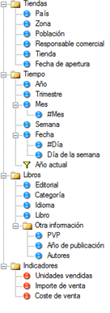
En este momento se deben hacer pruebas para verificar que el catálogo funciona, y que Bingo Intelligence genera correctamente las sentencias SQL.
Verificación del funcionamiento del nuevo catálogo
Para verificar que el catálogo se ha configurado correctamente, se puede crear una nueva aplicación utilizando el catálogo recién creado, o se puede utilizar la herramienta de catálogo para probar consultas.
En este caso, utilizaremos el “Probador de consultas”. Para ello, seleccionaremos la opción “Probar consulta sobre este catálogo” del menú “Herramientas”, y definiremos esta consulta:
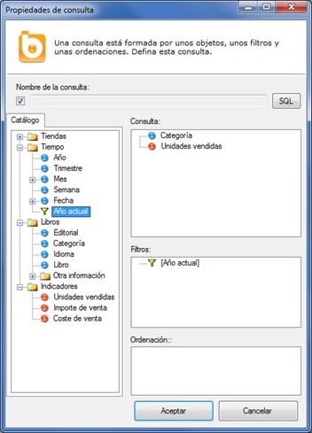
Pulsando el botón “SQL” veremos la sentencia SQL generada:
 AS UnidadesVendidas
FROM LB_VENTAS
INNER JOIN LB_TIEMPO ON (LB_VENTAS.FECHA=LB_TIEMPO.FECHA)
INNER JOIN LB_LIBROS ON (LB_VENTAS.ID_LIBRO=LB_LIBROS.ID_LIBRO)
INNER JOIN LB_CATEGORIAS ON (LB_LIBROS.ID_CATEGORIA=LB_CATEGORIAS.ID_CATEGORIA)
WHERE
LB_TIEMPO.ANYO=year(getdate())
GROUP BY
LB_CATEGORIAS.CATEGORIA")
Se observa que la sentencia es correcta, que incluye todas las tablas necesarias, y que devuelve las ventas del año actual por categorías.
Siguientes pasos
En este artículo se han descrito los primeros pasos con el diseñador de catálogos, y se ha mostrado como construir un sencillo catálogo, con una sola tabla de hecho, y con unas pocas dimensiones e indicadores. El diseñador de catálogos de Bingo Intelligence incluye muchas características adicionales para cubrir la mayoría de necesidades:
- Tablas agregadas
- Múltiples tablas de hecho
- Organización del diagrama por pestaña
- Indicadores avanzados (year-to-date, month-to-date, saldos, acumulados...)
- Filtros dinámicos
- Data-profiling
- Listas de valores
- Ordenaciones personalizadas
- Tablas derivadas
- Tablas adicionales (para poder implementar la “seguridad horizontal” y limitar la información a la que tiene acceso cada usuario)
- Detección de cambios en la estructura de la base de datos
- Verificación de la integridad de los datos y la corrección de las relaciones
En resto de apartados de este manual, se introducen y explican con mayor detalle estas funcionalidades.